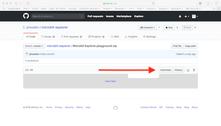

Overview
Installation
Install the Micro:bit Explorer Playground
To run the Micro:bit Explorer you will need an iPad capable of running Apple's Swift Playgrounds App. If the App is not installed on your iPad, go to the App Sore and search for Swift Playgrounds. It's free to download.
Once the Swift Playgrounds App is installed, using the web browser on your iPad, go to github.com/phwallen/microbit-explorer
and click on file Microbit Explorer.playground.zip.

Press the Download button to download the file to your iPad
When the Micro:bit Explorer Playground has been downloaded; tap Open in "Playgrounds"
Flash the Micro:bit with the Explorer Program
Micro:bit Explorer requires a special program to run on the Micro:bit.
You will need to use a computer with a USB connection.
Connect the Micro:bit to the computer using a suitable USB cable.
Using the web browser on your computer, go to github.com/phwallen/microbit-explorer and click on file Microbit Explorer.hex.zip
Press the Download button to download the file to your computer.
Now you can 'Flash' the Micro:bit Explorer program to the Micro:bit.
If you are not familar with flashing programs to the Micro:bit read this simple guide - Using micro:bit in 5 easy steps. and just follow the instructions in Step 3
When the Micro:bit Explorer program has been flashed, the Micro:bit will display R on the LED matrix.